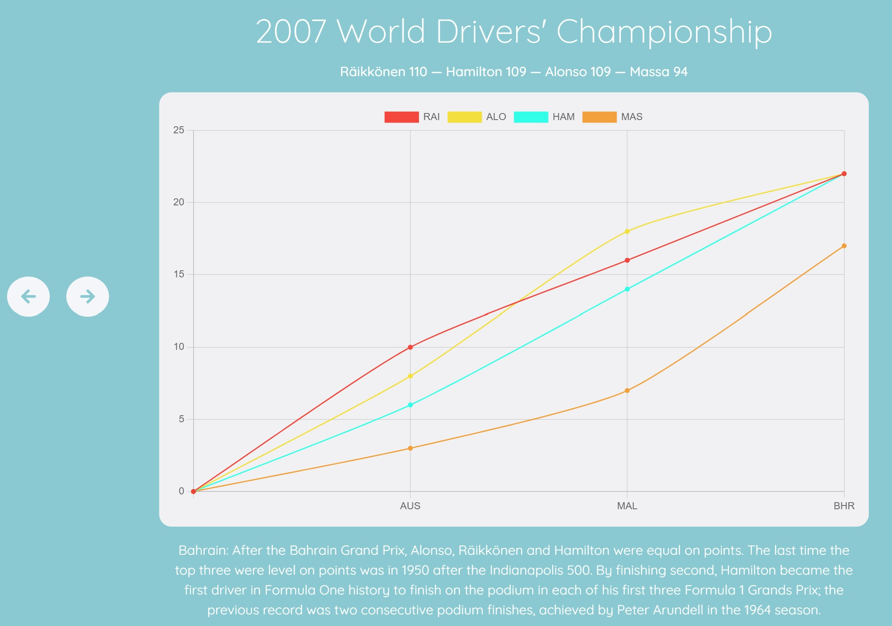

How it Works:
The simulator page has two modes:
Replay Mode and Simulator.
Moves through each race of the season allowing you to follow the dramatic, championship winning (or losing) moments of each season.
A sandbox manipulation mode where you can change the dramatic events of each season that were explored in Replay Season mode.
Learn how each mode works by clicking the buttons above.
In Replay Mode the simulator moves through each race one at a time, highlighting the defining moments of that season. Start here and then move to the Simulator to explore more.
In the Simulator the entire season's results are shown along with a series of toggles that allow you to choose whether the dramatic and defining moments of that season count. Use these toggles to explore different possible outcomes for the season.
